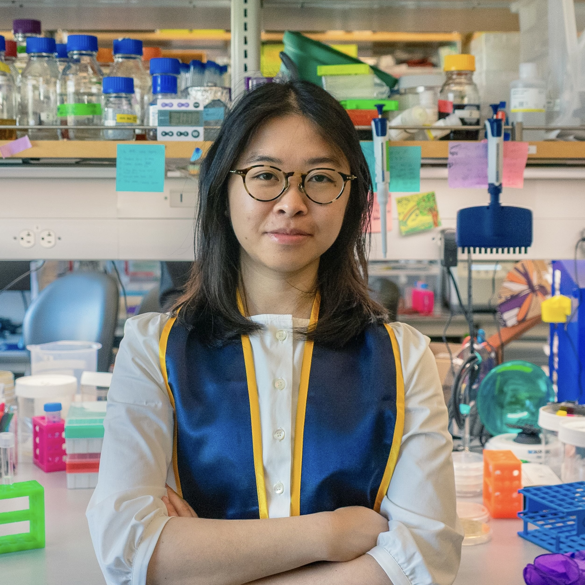

Hi, I'm a recent UC Berkeley graduate where I studied the Z-stack of neuroscience, molecular biology, and data science.
These days, you can find me pipetting away in the lab, digging through a design textbook, photographing the Bay Area music scene, or tackling my reading list at a local coffee shop.
I graduated in May 2026 with a double B.A. in Molecular & Cell Biology (with Honors) and Neuroscience. In my undergraduate research, I completed an honors thesis exploring alternatives to typical engraftment methods for microbiome-based therapeutics.
I'm seeking post-graduate opportunities to research the dialectical process of aging and development, alongside experimenting how to communicate science visually. I'm always looking for conversations about what inspires you to create and explore.
Please reach out for my resume/CV and opportunities to creatively collaborate.

Currently reading THE MAGIC MOUNTAIN by Thomas Mann and listening to PROMISES by Floating Points + Pharoah Sanders.